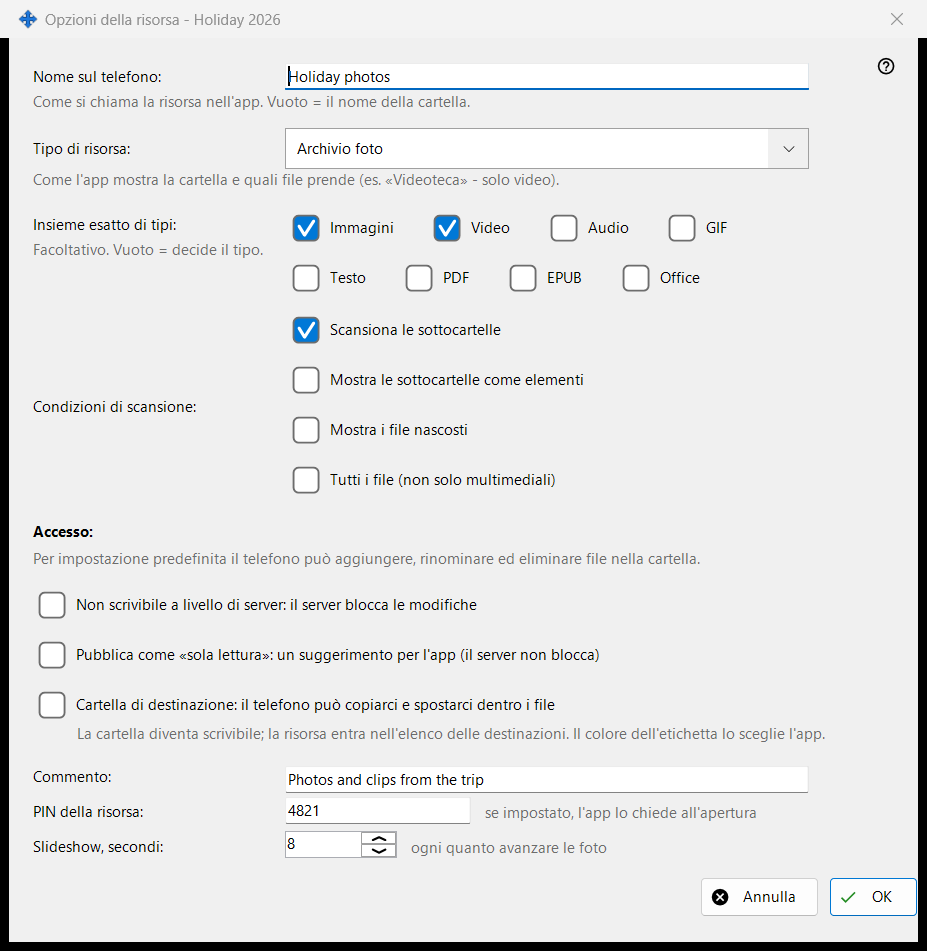
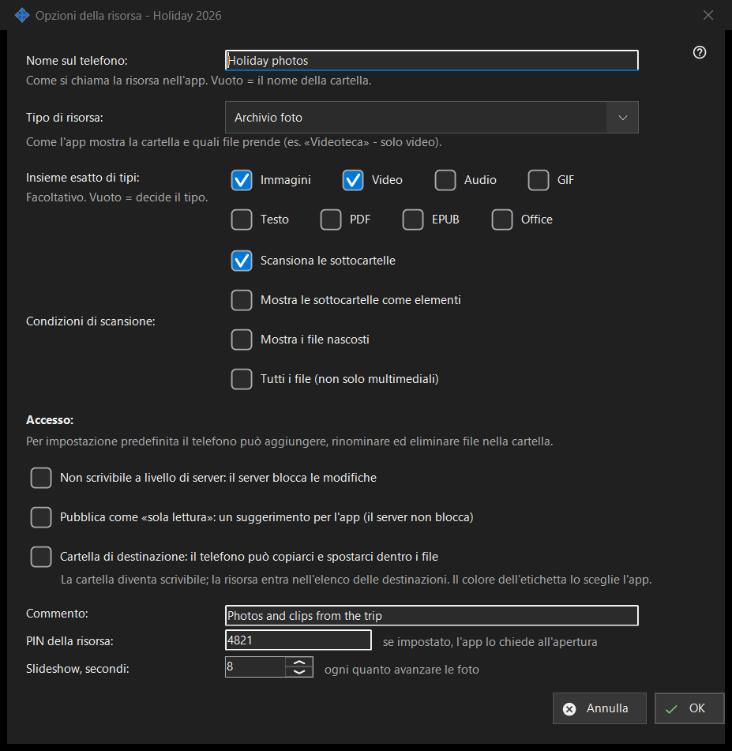

Opzioni della risorsa
Scopo
Opzioni di una cartella condivisa: il suo nome sul telefono, il tipo, quali file vengono mostrati, chi può modificarli e alcuni extra. Si apre da «Modifica» nella finestra principale, da una riga di cartella e dalla procedura guidata della risorsa. Il titolo reale della finestra termina con il nome della cartella.


In questo ordine
- Imposta il nome che mostrerà il telefono.
- Scegli il tipo di risorsa o un insieme esatto di media.
- Imposta le condizioni di scansione.
- Scegli l'accesso.
- Apri «Opzioni avanzate» per un commento, un PIN e l'intervallo dello slideshow.
- Premi OK.
Gli elementi
Nome e tipo
«Nome sul telefono:» è il nome con cui la cartella compare nell'app; vuoto significa il nome della cartella. «Tipo di risorsa:» offre Cartella normale, Libreria audio, Videoteca, Archivio foto e Documenti. «Insieme esatto di tipi:» sceglie i tipi esatti (Immagini, Video, Audio, Testo, Tutti i file); vuoto significa che decide il tipo.
Condizioni di scansione
«Scansiona le sottocartelle», «Mostra le sottocartelle come elementi», «Mostra i file nascosti» e «Tutti i file (non solo multimediali)».
Accesso
Per impostazione predefinita il telefono può aggiungere, rinominare ed eliminare file nella cartella. «Sola lettura» è un vero blocco: il server rifiuta le modifiche. Un suggerimento di sola lettura dice soltanto all'app di nascondere i pulsanti di modifica; il server non blocca nulla. Una cartella di destinazione può ricevere copie e spostamenti dal telefono; diventa scrivibile ed entra nell'elenco dei destinatari, e il suo colore lo sceglie l'app.
Opzioni avanzate
Un commento (facoltativo), un PIN per la risorsa (l'app lo chiede quando la risorsa viene aperta) e l'intervallo dello slideshow in secondi. Le impostazioni vengono inviate al server quando confermi.
Impostazioni del gestore · Impostazioni condivisione SFTP · Impostazioni server di scambio